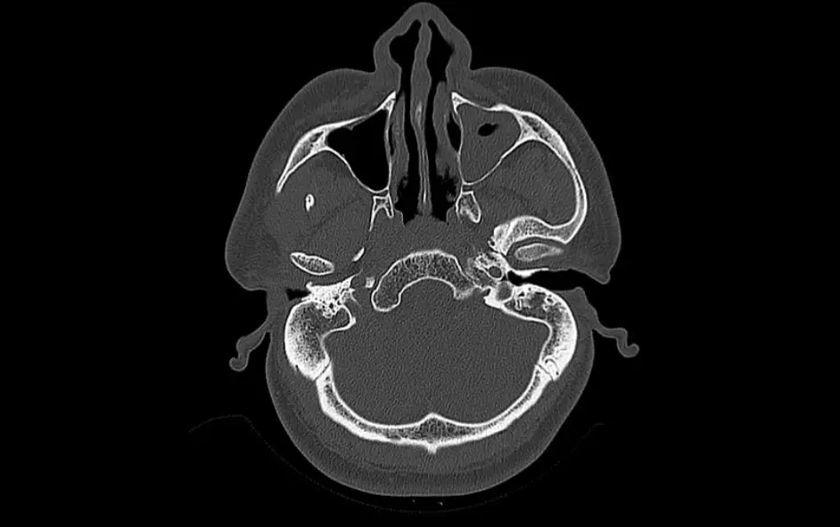

DX.4 — Sinusite maxillaire aiguë
La sinusite maxillaire aiguë guérit le plus souvent seule, car elle complique d’abord un rhume viralS2S3. Le débutant commet donc trois erreurs : il prescrit un antibiotique dès le troisième jour, demande une imagerie inutile et méconnaît une complication orbitaireS1S3. La décision de la Société suisse d’infectiologie (SSI) repose sur la durée, la fièvre et la rechute, jamais sur la couleur du mouchage seuleS1.
1. Définition
Les Hôpitaux universitaires de Genève (HUG) définissent la rhinosinusite aiguë comme l’infection d’un ou de plusieurs sinus qui survient dans le contexte d’un rhumeS2. La sinusite maxillaire aiguë désigne cette atteinte lorsqu’elle siège dans le sinus maxillaire, sous l’orbite et au-dessus des racines dentaires supérieuresS1S12. Le European Position Paper on Rhinosinusitis and Nasal Polyps (EPOS) exige un début brutal, au moins deux symptômes, dont une obstruction nasale ou un écoulement, et une durée inférieure à 12 semainesS3.
2. Épidémiologie (Suisse, puis Europe)
Aucune incidence suisse de la sinusite maxillaire n’a été lue ; la Phase A classe donc ce diagnostic au quatrième rang sur un argument clinique, car le rhume est très courantS2. Les données européennes de l’EPOS chiffrent la prévalence annuelle de la rhinosinusite aiguë entre 6 et 15 %, alors que la surinfection bactérienne reste rareS3. Le tableau des fréquences, le terrain et l’histoire naturelle expliquent pourquoi l’abstention surveillée domine la pratique.
Fréquences lues : Suisse, puis Europe
Le tableau sépare les chiffres suisses des chiffres européens, car leurs populations et leurs définitions diffèrent ; aucun chiffre non européen n’y figureS2S3.
| Mesure | Valeur | Population, source |
|---|---|---|
| Rhinosinusite chronique (≥ 3 mois) | jusqu’à 15 % de la population | Genève, HUGS2 |
| Polypose nasale | jusqu’à 3 % de la population | Genève, HUGS2 |
| Rhinosinusite aiguë, prévalence sur un an | 6 à 15 % | Europe, EPOS 2020S3 |
| Rhinosinusite aiguë post-virale et bactérienne (critères EPOS) | 18 % | Pays-Bas, étude prospective citée par l’EPOSS3 |
| Consultation du médecin de famille pour rhinosinusite aiguë | 3,4 cas pour 100 habitants par an | Suède, étude rétrospective citée par l’EPOSS3 |
| Rhumes viraux compliqués d’une surinfection bactérienne | 0,5 à 2 % | EPOS 2020S3 |
| Complications orbitaires, intracrâniennes ou osseuses | environ trois par million d’habitants et par an | EPOS 2020S3 |
| Complications chez les patients hospitalisés | environ 3 à 20 % | EPOS 2020, séries biaisées par la sélectionS3 |
La rhinosinusite chronique figure ici pour mémoire, puisqu’elle dure au moins trois mois et sort donc du cadre aigu de ce coursS2.
Terrain et facteurs favorisants
L’EPOS retient le tabagisme actif et passif comme facteur qui prédispose à la rhinosinusite aiguëS3. Il signale aussi qu’une maladie chronique associée peut augmenter le risque, sans en chiffrer l’effetS3. Les infections et les gestes dentaires figurent parmi les causes de rhinosinusite que l’EPOS rappelle au médecin de premier recoursS3.
| Facteur | Ce que dit la source | Conséquence pour l’anamnèse |
|---|---|---|
| Rhume viral récent | Facteur de risque le plus fréquent selon l’EPOSS3 | Dater le début du rhume |
| Tabac actif ou passif | Prédispose à la rhinosinusite aiguëS3 | Demander l’exposition |
| Foyer dentaire, fistule bucco-sinusienne | Source reconnue de sinusite maxillaire aiguëS3 | Examiner les dents supérieures |
| Allergie | Rôle faible selon l’EPOSS3 | Ne pas attribuer la sinusite à l’allergie seule |
Histoire naturelle du rhume à la surinfection
L’EPOS montre que la plupart des symptômes du rhume disparaissent vers le cinquième jour et que le tableau est résolu vers le septième jourS3. L’écoulement nasal et la toux peuvent toutefois durer trois ou quatre jours de plus, si bien qu’ils ne signent pas à eux seuls une surinfectionS3.
| Étape | Définition EPOS | Décision |
|---|---|---|
| Rhume (rhinosinusite virale) | Symptômes depuis moins de 10 joursS3 | Soins symptomatiques |
| Rhinosinusite post-virale | Aggravation après 5 jours ou persistance après 10 joursS3 | Traitement local, pas d’antibiotique |
| Rhinosinusite bactérienne probable | Au moins 3 critères sur 5S3 | Discuter l’antibiotique selon la SSIS1 |
| Complication | Signes d’alarme orbitaires ou neurologiquesS3 | Hospitalisation, imagerie injectéeS1S3 |
3. Physiopathologie
Le rhume viral enflamme la muqueuse nasale et sinusienne ; cette inflammation explique la douleur, l’obstruction et le mouchage sale que décrivent les HUGS2. Selon l’EPOS, la cascade inflammatoire provoque un œdème, une hypersécrétion de mucus et une obstruction des sinus, ce qui entretient les symptômesS3. Une petite fraction des rhinosinusites post-virales évolue ensuite vers une surinfection bactérienne, que la microbiologie suisse et l’origine dentaire éclairent.
Sinus de la face enflammés. Cette illustration anatomique publiée en couleur montre un visage de face et un crâne de trois quarts, avec les sinus colorés.

Lisez d'abord seul ce cliché (sinus de la face enflammés) : cherchez vous-même le signe.
La copie annotée (sinus de la face enflammés) montre les repères numérotés, qui sont décrits ci-dessous.
- 1. Le sinus frontal, en vert, se projette au-dessus des sourcils ; sa sinusite donne une céphalée sus-orbitaire selon la SSI.S1S12
- 2. Les cellules ethmoïdales, en bleu, siègent entre les orbites ; leur atteinte comble l’angle interne de l’œil et œdématie la paupière.S1S12
- 3. Le sinus maxillaire, en orange, est situé dans la joue sous l’orbite ; il est le siège de la douleur sous-orbitaire étudiée ici.S1S12
- 4. Sur le crâne, le sinus maxillaire surplombe les dents supérieures ; cette proximité explique les sinusites d’origine dentaire, ce que l’image suggère par déduction.S3S12
- Le halo rouge figure l’inflammation de façon artistique : il ne correspond à aucun signe visible chez le patient.S12
Ce que l'image décide. La topographie de la douleur oriente vers le sinus atteint, puisque la SSI associe chaque localisation à un tableau distinct.S1
Germes en cause et résistances en Suisse
La SSI justifie son choix d’antibiotique par la sensibilité des germes observée en Suisse, ce qui rend ce tableau directement utile à la prescriptionS1.
| Germe | Donnée suisse ou européenne | Conséquence thérapeutique |
|---|---|---|
| Haemophilus influenzae | Environ 20 à 25 % des souches résistent aux aminopénicillines en SuisseS1 | L’amoxicilline seule peut échouer ; l’association à l’acide clavulanique couvre mieuxS1 |
| Moraxella catarrhalis | Résistant aux aminopénicillines selon la SSIS1 | Amoxicilline-acide clavulanique dans les situations particulièresS1 |
| Staphylococcus aureus | Mieux couvert par l’amoxicilline-acide clavulaniqueS1 | Réservé aux formes sévères ou aux échecsS1 |
| Pneumocoque résistant à la pénicilline | Suspect chez le patient venant d’un pays à forte prévalenceS1 | Amoxicilline toutes les 8 heures selon la SSIS1 |
La SSI ajoute que les cultures nasopharyngées sont peu fiables, si bien qu’un écouvillon du nez n’identifie pas le germe du sinusS1.
Sinusite d’origine dentaire
L’EPOS rapporte qu’une fistule bucco-sinusienne et une maladie parodontale avec racine saillante ou abcès apical sont des sources reconnues de sinusite maxillaire aiguëS3. L’information professionnelle suisse (AIPS) de la mométasone exclut d’ailleurs l’indication d’une origine dentaire, ce qui impose de la chercher avant tout traitement localS8.
| Indice | Interprétation | Conduite |
|---|---|---|
| Douleur unilatérale persistante d’une dent ou de la face | Signe d’infection bactérienne grave selon l’AIPS de la mométasoneS8 | Consulter immédiatement un médecinS8 |
| Atteinte unilatérale | Critère de rhinosinusite bactérienne probable selon l’EPOSS3 | Chercher une cause locale, dentaire ou autreS3 |
| Geste dentaire récent | Cause reconnue de sinusite selon l’EPOSS3 | Adresser au médecin-dentiste, voir abcès dentoalvéolaire |
4. Démarche diagnostique
La démarche commence par éliminer une complication, puis elle date le rhume, enfin elle cherche les critères qui rendent probable une surinfection bactérienneS1S3. Ce raisonnement évite à la fois l’antibiotique inutile et le retard de prise en charge d’une atteinte orbitaire ou cérébraleS3. Le tableau des étapes détaille chaque décision, tandis que la fenêtre sur le lieu de soins précise qui fait quoi.
Démarche diagnostique en quatre étapes
| Étape | Question | Outil | Décision |
|---|---|---|---|
| 1. Gravité | Existe-t-il un signe d’alarme orbitaire, neurologique ou septique ? | Liste d’alarme de l’EPOSS3 | Oui : adresser en urgence ; tomodensitométrie (TDM) injectéeS1S3 |
| 2. Chronologie | Depuis combien de jours dure le rhume ? | Définitions de l’EPOSS3 | Moins de 10 jours sans aggravation : rhume, soins symptomatiquesS3 |
| 3. Surinfection | Les critères de la SSI sont-ils réunis ? | Absence d’amélioration ≥ 10 jours, fièvre ≥ 39,0 °C, double aggravationS1 | Oui : antibiotique ; non : surveillance attentiveS1 |
| 4. Cause locale | L’atteinte est-elle unilatérale, dentaire ou récidivante ? | Examen des dents, anamnèseS3 | Avis dentaire ou oto-rhino-laryngologique (ORL) selon la causeS2S3 |
Cette séquence suit l’ordre des parcours de soins de l’EPOS, qui placent les signes d’alarme avant toute discussion thérapeutiqueS3.
Qui prend en charge, et où ?
L’EPOS décrit un parcours qui va de l’autosoin et de la pharmacie au médecin de premier recours, puis aux soins secondaires ou tertiairesS3. Les HUG réservent la chirurgie des sinus aux rhinosinusites aiguës récidivantes, au moins quatre fois par an, ou aux infections fongiquesS2.
| Niveau | Situation | Action |
|---|---|---|
| Autosoin, pharmacie | Rhume de moins de 10 jours | Décongestionnant, antalgique, spray salinS3 |
| Médecin de premier recours | Persistance, fièvre, double aggravation | Critères de la SSI, antibiotique si indiquéS1 |
| Spécialiste ORL, urgence | Signe d’alarme, échec, récidive | Imagerie, avis spécialisé, chirurgie éventuelleS1S2S3 |
5. Anamnèse ciblée et drapeaux rouges
L’anamnèse caractérise la douleur, date le début du rhume et cherche la rechute après amélioration, car ces trois traits suffisent souvent à déciderS1S3. Elle interroge ensuite les dents supérieures et les gestes dentaires récents, puis elle traque systématiquement les drapeaux rouges de l’EPOSS3. La fenêtre sur la douleur et la grille de questions proposent les formulations utiles au cabinet.
Caractères de la douleur selon le sinus
La SSI décrit pour chaque sinus une douleur typique ; ces descriptions servent à localiser l’atteinte, mais elles ne prouvent pas la nature bactérienneS1.
| Sinus | Symptômes décrits par la SSI |
|---|---|
| Maxillaire | Douleur infra-orbitaire uni- ou bilatérale, augmentée tête penchée en avant, parfois pulsatile, maximale en fin d’après-midi et la nuitS1 |
| Frontal | Céphalée sus-orbitaireS1 |
| Ethmoïdal | Comblement de l’angle interne de l’œil, œdème palpébral, céphalée rétro-orbitaireS1 |
| Sphénoïdal | Céphalée rétro-orbitaire permanente irradiant au vertex, pouvant simuler une hypertension intracrânienneS1 |
La SSI réserve l’amoxicilline-acide clavulanique aux sinusites frontales, ethmoïdales et sphénoïdales ; la localisation modifie donc aussi le traitementS1.
Drapeaux rouges : adresser en urgence
L’EPOS demande d’adresser en soins secondaires ou tertiaires tout patient qui présente un des signes suivantsS3. Ces complications restent rares, mais elles surviennent tôt et leur évolution ne dépend pas de la prescription d’antibiotiques en premier recoursS3.
| Drapeau rouge | Complication évoquée | Conduite |
|---|---|---|
| Œdème ou érythème périorbitaire | Cellulite préseptale ou orbitaireS3 | Urgence ORL et ophtalmologiqueS3 |
| Globe déplacé, vision double, ophtalmoplégie | Abcès sous-périosté ou orbitaireS3 | TDM injectéeS1 |
| Baisse de l’acuité visuelle | Atteinte orbitaire évoluéeS3 | Urgence ophtalmologiqueS3 |
| Céphalée frontale sévère, tuméfaction frontale | Complication osseuse ou intracrânienneS3 | Imagerie injectée en urgenceS1S3 |
| Signes méningés ou neurologiques | Empyème, abcès cérébral, méningite, thromboseS3 | Hospitalisation immédiateS3 |
| Signes de sepsis | Infection disséminéeS3 | Hospitalisation immédiateS3 |
Grille de questions au cabinet
| Question | Réponse qui inquiète | Pourquoi |
|---|---|---|
| Depuis quand êtes-vous enrhumé ? | 10 jours ou plus sans amélioration | Critère de la SSIS1 |
| Aviez-vous commencé à guérir ? | Rechute 5 à 6 jours après une amélioration | Double aggravation selon la SSIS1 |
| Avez-vous mesuré la fièvre ? | 39,0 °C ou plus pendant 3 à 4 jours avec pus ou douleur | Signe de gravité selon la SSIS1 |
| La douleur est-elle d’un seul côté ? | Douleur unilatérale persistante | Origine dentaire ou bactérienne à chercherS3S8 |
| Avez-vous eu des soins dentaires ? | Extraction, abcès ou fistule récents | Source dentaire selon l’EPOSS3 |
| Voyez-vous double ou moins bien ? | Oui | Drapeau rouge orbitaireS3 |
| Êtes-vous allergique à la pénicilline ? | Oui, avec ou sans réaction sévère | Change la molécule selon la SSIS1 |
6. Examen physique ciblé, région par région
L’examen physique cherche d’abord les signes d’alarme, puis il localise le sinus et exclut une cause dentaireS1S3. L’EPOS précise que la rhinoscopie antérieure reste un examen limité, mais qu’elle doit être faite en premier recoursS3. Chaque région a sa fenêtre : visage, fosses nasales, bouche et dents, oropharynx, orbite et examen neurologique.
Région 2 : les fosses nasales
La rhinoscopie antérieure montre l’inflammation de la muqueuse et l’écoulement ; l’EPOS la juge limitée, mais nécessaire en premier recoursS3.
| Signe | Interprétation | Conduite |
|---|---|---|
| Écoulement coloré | Un des cinq critères de surinfection de l’EPOSS3 | Compter les autres critèresS3 |
| Atteinte d’un seul côté | Critère de surinfection et indice de cause localeS3 | Examiner les dentsS3 |
| Polypes visibles | Rhinosinusite chronique avec polypesS2 | Sortir du cadre aigu ; avis ORLS2 |
Région 3 : la bouche et les dents supérieures
L’examen des prémolaires et des molaires supérieures cherche un foyer, car l’EPOS indique que l’abcès apical et la fistule bucco-sinusienne sont des sources de sinusiteS3.
| Signe | Interprétation | Conduite |
|---|---|---|
| Dent supérieure douloureuse à la percussion, carie profonde | Foyer dentaire possibleS3 | Voir pulpite et abcès dentoalvéolaire |
| Communication bucco-sinusienne après extraction | Fistule bucco-sinusienneS3 | Avis de chirurgie oraleS3 |
| Parodontite sévère | Source possible de sinusiteS3 | Avis du médecin-dentisteS3 |
Région 5 : l’orbite et l’œil
L’EPOS reprend la classification de Chandler, qui ordonne les complications orbitaires de la cellulite préseptale à la thrombose du sinus caverneuxS3.
| Stade de Chandler | Signes à chercher | Conduite |
|---|---|---|
| 1. Cellulite préseptale | Œdème palpébral sans trouble oculomoteurS3 | Diagnostic clinique, imagerie souvent inutileS3 |
| 2. Cellulite orbitaire | Chémosis, douleur oculaire, ophtalmoplégieS3 | Antibiotique intraveineux, imagerieS3 |
| 3. Abcès sous-périosté | Exophtalmie, mobilité réduiteS3 | Drainage chirurgical possibleS3 |
| 4. Abcès orbitaire | Exophtalmie, baisse visuelleS3 | Drainage chirurgicalS3 |
| 5. Thrombose du sinus caverneux | Atteinte bilatérale, signes neurologiquesS3 | Urgence vitaleS3 |
Région 6 : examen neurologique et état général
Les complications endocrâniennes comprennent l’empyème, l’abcès cérébral, la méningite, l’encéphalite et les thromboses veineuses ; leurs signes peuvent rester peu spécifiquesS3. L’examen cherche donc une raideur de nuque, un déficit focal et des signes de sepsis, puisque leur présence impose l’hospitalisationS3.
7. Approche syndromique
La sinusite maxillaire appartient au syndrome rhinosinusien : une douleur faciale suit un rhume, avec obstruction et mouchage saleS2. Ce syndrome se sépare de la douleur dentaire, articulaire et neuropathique par sa chronologie et par ses signes nasaux, comme le montre le tableau différentielS1S3. La fenêtre sur la forme chronique évite de confondre une poussée aiguë avec une rhinosinusite qui dure depuis des mois.
Diagnostic différentiel au sein de la situation S1.11
Ce tableau confronte la sinusite aux autres diagnostics de la liste canonique ; il reprend les traits que les cours correspondants développent.
| Diagnostic | Trait qui oriente | Trait qui écarte la sinusite |
|---|---|---|
| Pulpite dentaire | Douleur dentaire provoquée par le froid ou le chaud | Absence de rhume et de signe nasal |
| Abcès dentoalvéolaire | Tuméfaction gingivale ou faciale, dent causale | Source dentaire de sinusite possible : chercher les deuxS3 |
| Trouble temporo-mandibulaire douloureux | Douleur à la mastication, bruit articulaire | Douleur prétragienne, non sous-orbitaire |
| Névralgie du trijumeau | Décharges brèves déclenchées par l’effleurement | Pas de fond continu ni de fièvre |
| Artérite à cellules géantes | Céphalée nouvelle après 50 ans, claudication de la mâchoire | Syndrome inflammatoire sans rhume |
| Sinusite sphénoïdale | Céphalée rétro-orbitaire permanente vers le vertexS1 | Siège postérieur ; amoxicilline-acide clavulanique selon la SSIS1 |
Rhinosinusite chronique et récidivante
Les HUG définissent la rhinosinusite chronique par une inflammation qui dure au moins trois mois, avec obstruction, écoulement, douleur faciale et troubles de l’odoratS2. La forme aiguë récidivante compte au moins quatre épisodes par an avec des intervalles libres, selon l’EPOS et les HUGS2S3.
8. Diagnostic positif et critères
Le diagnostic positif reste clinique : la SSI ne recommande ni culture ni imagerie pour une sinusite bactérienne non compliquéeS1. Deux grilles se complètent ; l’EPOS définit la rhinosinusite et la surinfection probable, tandis que la SSI fixe les critères qui justifient l’antibiotiqueS1S3. Les critères de l’EPOS et les critères de la SSI figurent côte à côte pour faciliter la décision.
Critères de l’EPOS 2020
| Niveau | Critères |
|---|---|
| Rhinosinusite aiguë de l’adulte | Début brutal d’au moins 2 symptômes, dont obstruction ou écoulement ; ± douleur ou pression faciale ; ± baisse de l’odorat ; durée < 12 semainesS3 |
| Rhinosinusite post-virale | Aggravation après 5 jours ou persistance après 10 joursS3 |
| Surinfection bactérienne probable | ≥ 3 critères parmi : écoulement coloré, douleur locale sévère, fièvre > 38 °C, vitesse de sédimentation (VS) ou protéine C réactive (CRP) élevée, double aggravationS3 |
L’EPOS ajoute l’atteinte unilatérale dans son parcours de soins comme argument de surinfection ; elle invite alors à chercher une cause localeS3. La VS et la CRP n’y sont qu’un critère parmi cinq, si bien qu’aucune valeur seuil n’est fixéeS3.
Critères suisses de l’antibiothérapie (SSI)
| Critère SSI | Définition exacte | Décision |
|---|---|---|
| Absence d’amélioration | Symptômes compatibles sans amélioration clinique après ≥ 10 joursS1 | AntibiotiqueS1 |
| Signes de gravité | Fièvre ≥ 39,0 °C et écoulement purulent ou douleur faciale pendant au moins 3 à 4 jours consécutifsS1 | AntibiotiqueS1 |
| Double aggravation | Fièvre, céphalée ou sécrétion accrue 5 à 6 jours après une amélioration initialeS1 | AntibiotiqueS1 |
| Aucun de ces critères | Pas d’indication urgenteS1 | Surveillance attentive (watchful waiting)S1 |
Ces critères de la SSI concernent les adultes comme les enfantsS1. Elle s’appuie sur la recommandation de l’Infectious Diseases Society of America (IDSA), source non européenne signalée, et sur les recommandations françaisesS1.
9. Examens complémentaires
Aucun examen n’est utile au diagnostic d’une sinusite non compliquée, car la SSI considère que l’imagerie est non spécifique dans cette situationS1. Les examens servent donc à trois usages : chercher une complication, identifier le germe après échec, et explorer une cause localeS1S3. Le tableau des examens ciblés précise l’indication, le seuil et la conduite de chacun.
Sinusite maxillaire gauche en tomodensitométrie. Cette coupe axiale de TDM, publiée en niveaux de gris, montre les sinus maxillaires et la base du crâne en fenêtre osseuse.

Lisez d'abord seul ce cliché (sinusite maxillaire gauche en tomodensitométrie) : cherchez vous-même le signe.
La copie annotée (sinusite maxillaire gauche en tomodensitométrie) montre les repères numérotés, qui sont décrits ci-dessous.
- 1. Le sinus maxillaire gauche du patient, à droite de l’image par convention radiologique, est comblé par un contenu de densité tissulaire.S13
- 2. Une petite bulle d’air persiste dans le sinus comblé ; elle témoigne d’un contenu liquidien ou muqueux qui remplace l’air.S13
- 3. Le sinus maxillaire droit reste noir, donc aéré : il sert de comparaison interne.S13
- 4. Les fosses nasales et la cloison séparent les deux sinus et se lisent avant de conclure à une atteinte unilatérale.S13
Ce que l'image décide. L’image montre ce que la TDM objective, mais la décision reste clinique, sauf suspicion de complication purulente.S1
Examens ciblés : indication, seuil, interprétation, conduite
Le tableau suit la recommandation suisse, puis il la complète par l’EPOS lorsque la SSI ne traite pas la questionS1S3.
| Examen | Indication | Seuil ou résultat | Interprétation | Conduite |
|---|---|---|---|---|
| Aucun examen | Sinusite non compliquéeS1 | — | Diagnostic cliniqueS1 | Appliquer les critères de la SSIS1 |
| VS ou CRP | Doute sur une surinfectionS3 | « Élevée » : aucun seuil chiffré par l’EPOSS3 | Un critère sur cinqS3 | Compter avec les autres critèresS3 |
| TDM injectée | Suspicion de complication purulenteS1 | Collection, atteinte orbitaire ou osseuse | ComplicationS1S3 | Hospitalisation, drainage éventuelS3 |
| Imagerie par résonance magnétique (IRM) | Non recommandée par la SSI dans cette indicationS1 | — | — | Préférer la TDM injectéeS1 |
| Ponction du sinus avec culture | Échec du traitement empirique seulementS1 | Germe et antibiogramme | Guide la seconde ligneS1 | Geste spécialisé ORLS1S3 |
| Culture nasopharyngée | Aucune : peu fiableS1 | — | — | Ne pas préleverS1 |
| Examen dentaire, cliché dentaire | Atteinte unilatérale, douleur dentaireS3 | Foyer apical, fistule | Sinusite d’origine dentaireS3 | Traiter la dentS3 |
La SSI ne recommande pas l’IRM, même lorsqu’une complication purulente est suspectée ; elle préfère alors la TDM injectée, qui est plus accessibleS1.
10. Arbre décisionnel
L’arbre suit l’ordre des décisions de la SSI et de l’EPOS ; chaque branche renvoie à une conduite chiffrée du point 11S1S3.
- Un drapeau rouge est-il présent ? Œdème périorbitaire, vision double, baisse visuelle, signes méningés ou sepsis : adresser en urgence et demander une TDM injectéeS1S3.
- Sinon, le rhume dure-t-il moins de 10 jours sans rechute ? Oui : soins symptomatiques, sans antibiotiqueS3.
- Sinon, un critère de la SSI est-il présent ? Absence d’amélioration après ≥ 10 jours, fièvre ≥ 39,0 °C avec pus ou douleur pendant 3 à 4 jours, ou double aggravationS1.
- Non : surveillance attentive, corticoïde nasal possible chez l’adulte sans signe de gravité, réévaluation si aggravationS1S8.
- Oui : amoxicilline pendant 5 à 7 jours chez l’adulte, ou molécule de remplacement selon l’allergie et la gravitéS1.
- Le patient ne s’améliore pas après 72 heures d’amoxicilline ? La SSI propose alors l’amoxicilline-acide clavulaniqueS1.
- Échec persistant ou récidive ≥ 4 fois par an ? Avis ORL, ponction avec culture, recherche d’une cause dentaireS1S2S3.
11. Prise en charge selon les recommandations suisses
11.A But du traitement
Le traitement soulage la douleur et l’obstruction, réserve l’antibiotique aux surinfections probables et repère tôt les complicationsS1S3. L’EPOS rappelle qu’une mauvaise sélection des patients augmente le risque de résistance, alors que l’antibiotique n’aide qu’une petite partie des maladesS3.
11.B Moyens
Les moyens se répartissent entre soins locaux, antalgiques et antibiotiques ; le schéma structuré donne pour chacun la molécule, la dose, la durée, le contrôle et l’échec. Les fiches de l’AIPS détaillent l’amoxicilline, l’amoxicilline-acide clavulanique, la céfuroxime, la doxycycline, la mométasone, la xylométazoline, le paracétamol et l’ibuprofène. Les corticoïdes systémiques ne figurent pas dans ce schéma, car l’EPOS conclut qu’ils n’améliorent pas la guérison à 7 à 14 joursS3.
11.C Surveillance
La surveillance s’appuie sur des rendez-vous datés : le patient revient si les symptômes s’aggravent, et l’efficacité de l’antibiotique se juge à 72 heuresS1S8. Le calendrier de surveillance fixe les critères d’échec et la conduite à chaque échéance.
11.D Pronostic
La rhinosinusite post-virale guérit spontanément selon l’EPOS, qui déconseille pour cette raison l’antibiotique chez l’adulte et l’enfantS3. Les complications restent rares, à environ trois par million d’habitants et par an, et leur nombre n’a pas baissé avec la large prescription d’antibiotiquesS3.
Traitement structuré de la sinusite maxillaire aiguë de l’adulte
Ce tableau croise la recommandation de la SSI et les AIPS ; quand la dose suisse recommandée diffère de l’AIPS, la ligne le ditS1.
| Situation | Molécule | Dose (source) | Durée | Contrôle | Critère d’échec |
|---|---|---|---|---|---|
| Rhume ou forme post-virale | Furoate de mométasone nasal | 2 nébulisations de 50 µg 2× par jour par narine, soit 400 µg/jour (AIPS)S8 | Jusqu’à 15 jours étudiésS8 | Consulter si aggravationS8 | Fièvre, douleur unilatérale persistante, gonflement orbitaireS8 |
| Obstruction nasale | Xylométazoline 0,1 % | 1 pulvérisation par narine, ≤ 3 applications par jour (AIPS)S9 | Pas plus d’une semaineS9 | Arrêt à 7 joursS9 | Rhinite médicamenteuse si usage prolongéS9 |
| Douleur, fièvre | Paracétamol | 1 à 2 comprimés de 500 mg jusqu’à 4×/jour ; maximum 4000 mg/jour (AIPS)S10 | Selon les symptômes | Intervalle de 4 à 8 heuresS10 | Douleur non contrôlée : réévaluer |
| Douleur, fièvre | Ibuprofène | 400 mg toutes les 4 à 6 heures, maximum 1200 mg/jour en automédication (AIPS)S11 | Durée la plus courte possibleS11 | Tolérance digestive et rénaleS11 | Contre-indication : voir la ficheS11 |
| Critère SSI présent | Amoxicilline | Selon la recommandation SSI : 1 g toutes les 12 heures ou toutes les 8 heures ; l’AIPS indique 1500 à 3000 mg/jourS1S4 | 5 à 7 joursS1 | Réévaluation à 72 heuresS1 | Pas d’amélioration à 72 heuresS1 |
| Cas sévère, immunosuppression, sinus frontal, ethmoïdal ou sphénoïdal, échec à 72 heures | Amoxicilline-acide clavulanique | Selon la recommandation SSI : 1 g toutes les 8 heures ; l’AIPS prévoit 2× 1 g ou 3× 625 mg dans la sinusite aiguëS1S5 | 5 à 7 jours selon la SSIS1 | Fonction hépatique si ictère antérieurS5 | Échec : avis ORL, ponctionS1 |
| Allergie à la pénicilline sans contre-indication aux céphalosporines | Céfuroxime axétil | Selon la recommandation SSI : 500 mg toutes les 12 heures ; l’AIPS indique 250 mg 2× par jour dans la sinusiteS1S6 | 7 (5 à 10) jours selon l’AIPSS6 | Allergie croiséeS6 | Réaction allergique : arrêtS6 |
| Allergie à toutes les bêta-lactamines | Doxycycline | Selon la recommandation SSI : 100 mg toutes les 12 heures ; l’AIPS prévoit 200 mg le premier jour puis 100 mg par jourS1S7 | 5 à 7 jours selon la SSIS1 | Grossesse exclueS1S7 | Pas d’amélioration : avis spécialiséS1 |
Selon sa recommandation, la SSI préfère 1 g toutes les 12 heures pour l’adhérence, mais elle choisit 1 g toutes les 8 heures si un pneumocoque résistant est suspectéS1S4. Chez l’enfant, la SSI recommande l’amoxicilline à 25 mg/kg toutes les 12 heures pendant 10 à 14 jours ; cette dose suit la recommandation et l’AIPS indique 50 à 100 mg/kg/jourS1S4.
Amoxicilline — Amoxi-Mepha® (n° 44911)S4
| Classe | Aminopénicilline, première ligne de la SSI dans la sinusite bactérienne de l’adulteS1 |
|---|---|
| Indication AIPS | Infections de la sphère ORL, dont la sinusiteS4 |
| Dose AIPS | Adultes et enfants de plus de 40 kg : 1500 à 3000 mg/jour en 3 à 4 prises ; maximum 4000 à 6000 mg/jourS4 |
| Dose recommandée SSI | Selon la recommandation SSI : 1 g toutes les 12 heures ou toutes les 8 heures pendant 5 à 7 joursS1S4 |
| Contre-indications | « Amoxi-Mepha ne doit pas être administré aux patients présentant une hypersensibilité aux pénicillines ou aux céphalosporines. »S4 |
| Grossesse (AIPS) | « La prudence est donc de rigueur lors de l'emploi d'Amoxi-Mepha au cours de la grossesse. »S4 |
| Allaitement (AIPS) | « La substance ne doit donc pas être administrée pendant la période d'allaitement ou, si nécessaire, il faut procéder au sevrage de l'enfant. »S4 |
L’AIPS signale qu’un exanthème survient chez plus de 90 % des patients atteints de mononucléose infectieuse ou de leucémie lymphoïde traités par amoxicillineS4.
Amoxicilline-acide clavulanique — Co-Amoxicilline Sandoz® (n° 55185)S5
| Classe | Aminopénicilline associée à un inhibiteur de bêta-lactamaseS5 |
|---|---|
| Indication AIPS | Infections à germes sensibles, en particulier producteurs de bêta-lactamaseS5 |
| Dose AIPS | Sinusites aiguës : 2× 1 g (875/125) ou 3× 625 mg (500/125) par jour ; jusqu’à 3× 1 g par jour au maximumS5 |
| Dose recommandée SSI | Selon la recommandation SSI : 1 g toutes les 8 heures dans les formes sévères ou après échecS1S5 |
| Contre-indications | « L'usage de Co-Amoxicilline Sandoz est contre-indiqué en cas d'hypersensibilité connue aux pénicillines et céphalosporines ou à un composant de Co-Amoxicilline Sandoz, de même que chez les patients qui ont présenté un ictère ou des troubles de la fonction hépatique pendant un traitement antérieur par l'amoxicilline/acide clavulanique. »S5 |
| Grossesse (AIPS) | « Co-Amoxicilline Sandoz ne devrait donc être utilisé pendant la grossesse qu'en cas de nécessité absolue. »S5 |
| Allaitement (AIPS) | « Il ne faudrait donc pas allaiter pendant le traitement par Co-Amoxicilline Sandoz. »S5 |
L’AIPS rapporte une entérocolite nécrosante chez 1,5 % des nouveau-nés exposés après rupture prématurée des membranes, contre 0,5 % sans traitementS5.
Céfuroxime axétil — Zinat® (n° 49460)S6
| Classe | Céphalosporine orale, choix de la SSI en cas d’allergie à la pénicilline sans contre-indication aux céphalosporinesS1 |
|---|---|
| Dose AIPS | Sinusite bactérienne aiguë de l’adulte et de l’adolescent de plus de 12 ans : 250 mg 2× par jour ; durée usuelle 7 (5 à 10) joursS6 |
| Dose recommandée SSI | Selon la recommandation SSI : 500 mg toutes les 12 heuresS1S6 |
| Contre-indications | « Hypersensibilité à la céfuroxime ou à l'un des excipients de la préparation. » « Patients ayant une hypersensibilité connue aux antibiotiques de la famille des céphalosporines. »S6 |
| Grossesse (AIPS) | « Cependant, aucune étude contrôlée n'a été conduite chez la femme enceinte. » L’AIPS déconseille l’usage pendant la grossesse sauf nécessité claireS6 |
| Allaitement (AIPS) | « Son utilisation n'est donc pas recommandée pendant la période d'allaitement. »S6 |
L’AIPS exclut aussi les patients qui ont des antécédents d’hypersensibilité sévère, par exemple anaphylactique, à une autre bêta-lactamineS6.
Doxycycline — Doxycyclin-Mepha® (n° 65952)S7
| Classe | Tétracycline, dernier recours de la SSI si toutes les bêta-lactamines sont contre-indiquéesS1 |
|---|---|
| Indication AIPS | Infections de la sphère ORL, dont la sinusiteS7 |
| Dose AIPS | Adulte : 200 mg le premier jour, puis 100 mg par jour en dose uniqueS7 |
| Dose recommandée SSI | Selon la recommandation SSI : 100 mg toutes les 12 heuresS1S7 |
| Contre-indications | « Doxycyclin-Mepha est contre-indiqué chez les patients présentant une hypersensibilité connue à la doxycycline, à l'un des excipients de Doxycyclin-Mepha ou aux tétracyclines. » « En outre, Doxycyclin-Mepha est contre-indiqué chez les patients présentant des troubles sévères de la fonction hépatique. »S7 |
| Grossesse (AIPS) | « La doxycycline ne doit pas être administrée pendant la grossesse, sauf nécessité absolue »S7 |
| Allaitement (AIPS) | « Par conséquent, la doxycycline ne doit pas être administrée à la femme qui allaite » ; « Si l'administration de Doxycyclin-Mepha est nécessaire, l'allaitement doit être arrêté. »S7 |
La SSI rappelle elle aussi que la doxycycline est contre-indiquée pendant la grossesse ; ce point écarte la molécule chez la femme enceinte allergiqueS1.
Furoate de mométasone nasal — Mométasone Spirig® (n° 67641)S8
| Classe | Corticoïde nasal à biodisponibilité systémique inférieure à 1 %S8 |
|---|---|
| Indication AIPS | Rhino-sinusite aiguë non compliquée de l’adulte et de l’adolescent dès 12 ans, symptômes depuis plus d’une semaine et moins de quatre semainesS8 |
| Dose AIPS | Deux nébulisations de 50 µg 2× par jour dans chaque narine, soit 400 µg par jourS8 |
| Contre-indications | « Hypersensibilité au principe actif ou à l'un des excipients conformément à la composition. »S8 |
| Grossesse (AIPS) | « Le traitement par des corticoïdes en application nasale pendant la grossesse et l'allaitement n'aura lieu qu'en cas d'absolue nécessité. »S8 |
| Allaitement (AIPS) | « Aucune étude clinique n'a été effectuée chez la femme enceinte ou allaitante. »S8 |
Dans deux études de l’AIPS menées chez 1954 patients, 200 µg deux fois par jour pendant 15 jours ont amélioré les symptômes par rapport au placeboS8.
Ces mêmes études ne montrent pas de différence significative de symptômes entre l’amoxicilline à 500 mg trois fois par jour et le placeboS8.
Xylométazoline — Xylométazoline Stada® 0,1 % (n° 61376)S9
| Classe | Vasoconstricteur nasal de marque STADA (titulaire de l’autorisation : Spirig HealthCare SA)S9 |
|---|---|
| Indication AIPS | Rhume, et facilitation de l’écoulement des sécrétions en cas d’inflammation des sinusS9 |
| Dose AIPS | Adultes et adolescents dès 12 ans : 1 pulvérisation dans chaque narine, au plus 3 applications par jour, pas plus d’une semaineS9 |
| Contre-indications | Hypersensibilité, rhinite sèche, rhinite atrophique, glaucome à angle fermé, après hypophysectomie transsphénoïdale ou chirurgie exposant la dure-mèreS9 |
| Grossesse (AIPS) | « Du fait de ses propriétés vasoconstrictrices, Xylométazoline STADA ne doit pas être utilisé par précaution en cours de la grossesse »S9 |
| Allaitement (AIPS) | « Pendant l'allaitement, Xylométazoline STADA doit être utilisé uniquement sur prescription médicale. »S9 |
L’EPOS limite lui aussi les décongestionnants à moins de 10 jours dans son parcours d’autosoin, ce qui concorde avec la limite d’une semaine de l’AIPSS3S9.
Paracétamol — DAFALGAN® (n° 46206)S10
| Classe | Antalgique et antipyrétiqueS10 |
|---|---|
| Dose AIPS | Adulte de plus de 40 kg : jusqu’à 4× 1 à 2 comprimés de 500 mg ; dose maximale de 4000 mg par jour, intervalle de 4 à 8 heuresS10 |
| Contre-indications | Hypersensibilité au paracétamol, troubles sévères de la fonction hépatique, hépatite aiguë, maladie de GilbertS10 |
| Grossesse (AIPS) | « En cas de nécessité clinique, le paracétamol peut être pris ou utilisé pendant la grossesse. »S10 |
| Allaitement (AIPS) | « Bien que l'utilisation du paracétamol soit considérée comme compatible avec l'allaitement, la prudence est recommandée lors de l'utilisation du Dafalgan pendant l'allaitement. »S10 |
L’AIPS demande de vérifier que les autres médicaments pris ne contiennent pas de paracétamol, afin d’éviter un surdosageS10.
Ibuprofène — Irfen Dolo L forte® (n° 61210)S11
| Classe | Anti-inflammatoires non stéroïdiens (AINS)S11 |
|---|---|
| Dose AIPS | Adultes et adolescents de plus de 12 ans : 1 comprimé de 400 mg toutes les 4 à 6 heures ; maximum 1200 mg par jour en automédicationS11 |
| Contre-indications | Troisième trimestre de la grossesse, ulcère actif, maladie inflammatoire de l’intestin, insuffisance hépatique, rénale (clairance < 30 ml/min) ou cardiaque sévère, antécédent de bronchospasme sous AINSS11 |
| Grossesse (AIPS) | « Pendant les premier et deuxième trimestre de grossesse, l'ibuprofène ne doit être administré qu'en cas de nécessité absolue. »S11 |
| Allaitement (AIPS) | « Par mesure de précaution, l'ibuprofène ne doit donc pas être administré aux femmes qui allaitent. »S11 |
L’AIPS demande la dose efficace la plus faible pendant la durée la plus courte, car l’ulcère digestif peut survenir sans symptôme avant-coureurS11.
Surveillance datée et critères d’échec
| Échéance | Ce que l’on vérifie | Seuil d’échec | Conduite |
|---|---|---|---|
| Jour 0 | Drapeaux rouges, critères SSI, allergieS1S3 | Signe d’alarme présent | Urgence, TDM injectéeS1 |
| Jour 10 du rhume (sans antibiotique) | Amélioration cliniqueS1 | Aucune amélioration | Antibiotique selon la SSIS1 |
| Rechute après amélioration | Fièvre, céphalée, sécrétionsS1 | Rechute 5 à 6 jours après l’amélioration | Antibiotique selon la SSIS1 |
| 72 heures d’amoxicilline | Douleur, fièvre, état généralS1 | Absence d’amélioration | Amoxicilline-acide clavulaniqueS1 |
| Fin du traitement (jour 5 à 7) | Guérison | Persistance | Avis ORL, ponction avec cultureS1 |
| À tout moment | Œdème orbitaire, trouble visuel, signes neurologiquesS3 | Apparition d’un de ces signes | Hospitalisation immédiateS3 |
Le patient reçoit une consigne écrite de reconsulter si la fièvre, une douleur unilatérale ou un gonflement orbitaire apparaît, comme le demande l’AIPS de la mométasoneS8.
12. Prévention
La prévention vise le rhume et la surinfection ; l’EPOS retient l’arrêt du tabac, puisque le tabagisme actif et passif prédispose à la rhinosinusite aiguëS3. Le zinc pris dans les 24 heures à au moins 75 mg par jour raccourcit le rhume selon l’EPOS, mais ce complément reste hors AIPS dans ce coursS3. La prévention de la résistance passe enfin par une prescription sélective, car l’EPOS interdit l’antibiotique sans ordonnance ni indication fondéeS3.
13. Points clés
- La sinusite maxillaire aiguë complique un rhume ; elle reste le plus souvent virale et guérit seuleS2S3.
- Trois critères de la SSI justifient l’antibiotique : ≥ 10 jours sans amélioration, fièvre ≥ 39,0 °C avec pus ou douleur pendant 3 à 4 jours, double aggravationS1.
- L’amoxicilline pendant 5 à 7 jours reste la première ligne suisse ; l’échec se juge à 72 heuresS1.
- L’imagerie ne sert pas au diagnostic ; une complication suspectée exige une TDM injectée, jamais une IRMS1.
- Un œdème périorbitaire, une vision double ou une baisse visuelle imposent l’urgenceS3.
- Une douleur unilatérale persistante fait chercher une dent causaleS3S8.
14. Pièges et questions fréquentes à l'examen fédéral suisse
Les pièges suivants reprennent les erreurs que les sources suisses et européennes cherchent à prévenir ; chaque réponse renvoie à sa sourceS1S3.
| Question | Réponse attendue |
|---|---|
| 1. Une patiente a un mouchage jaune depuis 4 jours, sans fièvre : faut-il un antibiotique ? | Non ; aucun critère de la SSI n’est présent, la surveillance attentive s’imposeS1. |
| 2. Quels sont les trois critères suisses qui justifient l’antibiothérapie ? | ≥ 10 jours sans amélioration ; fièvre ≥ 39,0 °C avec pus ou douleur faciale 3 à 4 jours ; double aggravationS1. |
| 3. Quel antibiotique en première ligne chez l’adulte, et pour combien de temps ? | Amoxicilline, selon la SSI 1 g toutes les 12 heures ou 8 heures, pendant 5 à 7 joursS1S4. |
| 4. Le patient ne s’améliore pas après 72 heures d’amoxicilline : que faire ? | Passer à l’amoxicilline-acide clavulanique selon la SSIS1S5. |
| 5. Quelle imagerie en cas de suspicion de complication purulente ? | Une TDM injectée ; la SSI ne recommande pas l’IRMS1. |
| 6. Une patiente enceinte allergique à toutes les bêta-lactamines : la doxycycline convient-elle ? | Non ; la SSI et l’AIPS la contre-indiquent pendant la grossesse sauf nécessité absolueS1S7. |
| 7. Quel signe impose l’envoi immédiat aux urgences ? | Œdème périorbitaire, globe déplacé, vision double, ophtalmoplégie, baisse visuelle, signes méningés ou sepsisS3. |
| 8. Faut-il un écouvillon nasopharyngé pour identifier le germe ? | Non ; la SSI juge ces cultures peu fiables et réserve la ponction aux échecsS1. |
| 9. Pourquoi l’amoxicilline seule peut-elle échouer en Suisse ? | Environ 20 à 25 % des Haemophilus influenzae résistent aux aminopénicillinesS1. |
| 10. Les corticoïdes oraux accélèrent-ils la guérison ? | Non ; l’EPOS ne trouve aucun effet sur la guérison à 7 à 14 joursS3. |
Piège majeur : la couleur du mouchage ne suffit jamais à prescrire un antibiotique, car l’écoulement coloré n’est qu’un des cinq critères de l’EPOSS3.
Sources
Toutes les sources ont été lues et consultées le 13.11.2026 (Europe/Zurich) ; la source non européenne (IDSA) n’est citée que par la SSI et signalée comme telle.
- [S1] Société suisse d’infectiologie (SSI). Sinusite bactérienne aiguë, recommandation n° 2410, validée le 09.07.2024, valable jusqu’au 15.12.2026. https://ssi.guidelines.ch/guideline/2410/fr
- [S2] Hôpitaux universitaires de Genève (HUG), service d’ORL et de chirurgie cervico-faciale. Rhinosinusite aiguë et rhinosinusite chronique, dernière mise à jour du 23.04.2025. https://www.hug.ch/orl-chirurgie-cervico-faciale/rhinosinusite-aigue-rhinosinusite-chronique
- [S3] Fokkens WJ, Lund VJ, Hopkins C, Hellings PW, et al. European Position Paper on Rhinosinusitis and Nasal Polyps 2020 (EPOS2020). Rhinology 2020;58(Suppl S29):1-464. doi:10.4193/Rhin20.600. https://www.rhinologyjournal.com/Documents/Supplements/supplement_29.pdf
- [S4] Swissmedic, information professionnelle : Amoxi-Mepha® comprimés pelliculés (amoxicilline), Mepha Pharma AG, n° d’autorisation 44911, mise à jour septembre 2026. https://files.refdata.ch/simis-public-prod/MedicinalDocuments/174c174fbc1a4bcb8daa6f13b5231a20-fr.html
- [S5] Swissmedic, information professionnelle : Co-Amoxicilline Sandoz® comprimés pelliculés (amoxicilline, acide clavulanique), n° d’autorisation 55185, mise à jour mars 2026. https://files.refdata.ch/simis-public-prod/MedicinalDocuments/f7a0b62b87a64a1ba99c447009dfcf23-fr.html
- [S6] Swissmedic, information professionnelle : Zinat® (céfuroxime axétil), Sandoz Pharmaceuticals AG, n° d’autorisation 49460, mise à jour avril 2023. https://files.refdata.ch/simis-public-prod/MedicinalDocuments/951eb1bd630346c19086820afb483cc9-fr.html
- [S7] Swissmedic, information professionnelle : Doxycyclin-Mepha® comprimés (doxycycline), Mepha Pharma AG, n° d’autorisation 65952, mise à jour février 2024. https://files.refdata.ch/simis-public-prod/MedicinalDocuments/d04611462fef49b59dc81976852ec154-fr.html
- [S8] Swissmedic, information professionnelle : Mométasone Spirig HC spray nasal (furoate de mométasone), n° d’autorisation 67641, mise à jour avril 2021. https://files.refdata.ch/simis-public-prod/MedicinalDocuments/55142a6c3a8a49589294d9f3657a0fdd-fr.html
- [S9] Swissmedic, information professionnelle : Xylométazoline STADA® 0,05 % / 0,1 % spray nasal, n° d’autorisation 61376, mise à jour février 2025. https://files.refdata.ch/simis-public-prod/MedicinalDocuments/645de656a796474d9b9dc5641648a677-fr.html
- [S10] Swissmedic, information professionnelle : DAFALGAN® comprimés (paracétamol), UPSA Switzerland AG, n° d’autorisation 46206, mise à jour février 2025. https://files.refdata.ch/simis-public-prod/MedicinalDocuments/665471932df943b6be0dd276c4c8f5e9-fr.html
- [S11] Swissmedic, information professionnelle : Irfen Dolo L / Irfen Dolo L forte (ibuprofène), n° d’autorisation 61210, mise à jour décembre 2024. https://files.refdata.ch/simis-public-prod/MedicinalDocuments/a8df8a2c27ee43488e52fc84e3e4dc97-fr.html
- [S12] Blausen.com staff (BruceBlaus). Blausen 0800 Sinusitis, Wikimedia Commons, licence CC BY 3.0, consulté le 13.11.2026. https://commons.wikimedia.org/wiki/File:Blausen_0800_Sinusitis.png
- [S13] 511KeV. Left Maxillary Sinusitis on CT Slice, Wikimedia Commons, licence CC BY-SA 4.0, consulté le 13.11.2026. https://commons.wikimedia.org/wiki/File:Left_Maxillary_Sinusitis_on_CT_Slice.jpg
Le contenu reprend les sources citées ; il n'a pas été validé cliniquement par un médecin.